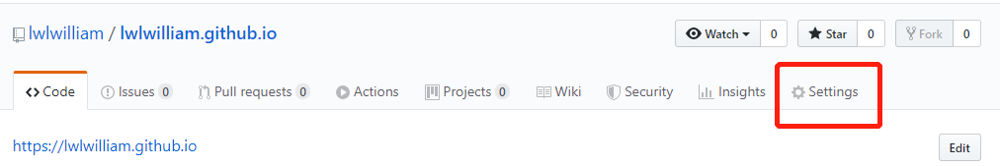
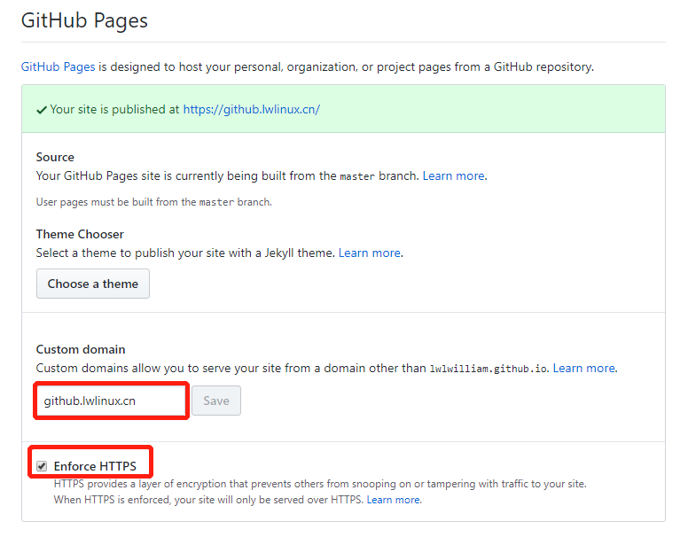
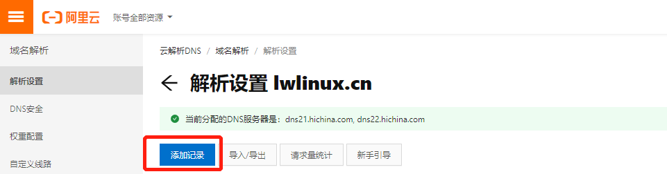
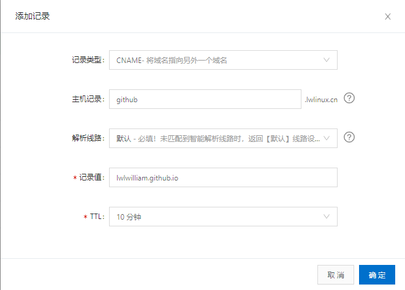

重新注册了个域名，有时候 web 开发没有域名还真是不方便。一下买了五年，美滋滋，当然顺便也要给 Github Pages 加个自己的烙印的。
为 Github Pages 添加自定义域名
如下进入设置页面，将自定义的域名填入Customer domain下的输入框中，如果要用 HTTPS 传输，则勾选Enforce HTTPS复选框。


效果就是在仓库中生成了一个 CNAME 文件，文件内容就是自定义的域名。目的就是在前台用户访问 user.github.io 时指向自定义域名（不知道说得对不对，毕竟现在还不是很专业）。
DNS 解析
前提是你已经拥有一个域名，如果没有就看看好了。我用的是阿里云，其它云服务端操作是一样的。进入添加 DNS 记录的表单。

为 user.github.io 域名添加 CNAME 记录，CNAME 就是别名的意思，添加之后访问自定义域名时，DNS 会将 IP 解析为 user.github.io 对应的 IP。

注意，在设置完成后，需要一段时间 DNS 记录才会生效。用类 Unix 系统的小伙伴可以使用 dig 命令来查看 DNS 记录。如果 DNS 解析生效，命令会返回如下结果，ANSWER SECTION 部分中的有一条记录github.lwlinux.cn 599 IN CNAME user.github.io，就是以上添加的 DNS CNAME 记录。
$ dig github.lwlinux.cn
; <<>> DiG 9.11.3-1ubuntu1.7-Ubuntu <<>> github.lwlinux.cn
;; global options: +cmd
;; Got answer:
;; ->>HEADER<<- opcode: QUERY, status: NOERROR, id: 14075
;; flags: qr rd ra; QUERY: 1, ANSWER: 5, AUTHORITY: 0, ADDITIONAL: 1
;; OPT PSEUDOSECTION:
; EDNS: version: 0, flags:; udp: 512
;; QUESTION SECTION:
;github.lwlinux.cn. IN A
;; ANSWER SECTION:
github.lwlinux.cn. 599 IN CNAME user.github.io.
user.github.io. 3599 IN A 185.199.110.153
user.github.io. 3599 IN A 185.199.109.153
user.github.io. 3599 IN A 185.199.108.153
user.github.io. 3599 IN A 185.199.111.153
;; Query time: 90 msec
;; SERVER: 8.8.8.8#53(8.8.8.8)
;; WHEN: Fri Mar 27 22:22:39 CST 2020
;; MSG SIZE rcvd: 144
至此，就算是完成了 Github Pages 的自定义域名。需要注意的是 HTTPS 生效会比较久，我就等了一天一夜，orz…另外，有的 Jekyll 模板可能会需要修改一下网站的 URL。